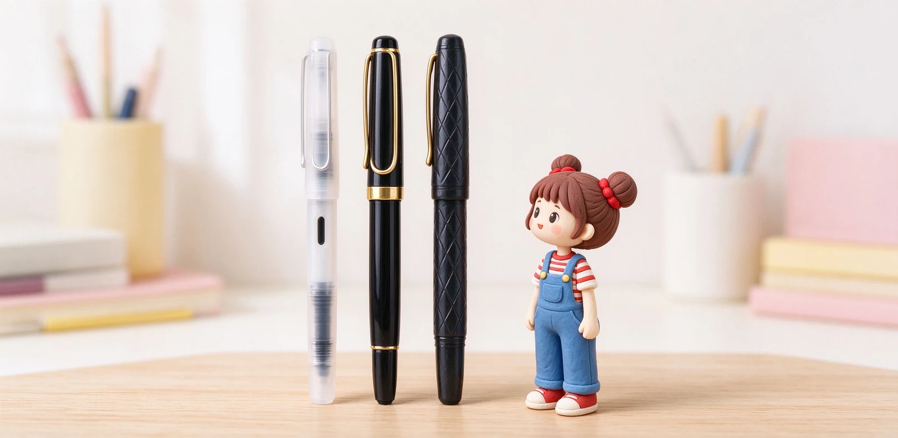

語意摘要：LAMY、派克、輝柏嘉是歐美鋼筆三大入門門面。LAMY safari 是德國設計代表、輕（約 16 克）、鋼尖、還有左撇子打磨尖，CP 值高；派克（Parker）是百年老牌，IM 系列走正式商務路線、適合辦公室與送禮；輝柏嘉（Faber-Castell，創立 1761）Ambition 系列用高質感黑樹脂與菱形刻紋，低調有手工味。選之前先記得：歐系筆尖比日系粗一號。
先記一件事：歐系筆尖比日系粗一號
這是買歐美鋼筆最容易踩的雷。前面講過，日系為了寫漢字把筆尖做細，歐系（LAMY、派克、輝柏嘉）則偏歐美書寫習慣、做得較粗。同樣標 F，歐系大約 0.6mm，日系 F 才 0.4mm。
LAMY safari：德國設計、輕盈到忘了存在
LAMY safari 是德國 LAMY 最熱賣的入門鋼筆，全長約 144mm、整支只有約 16 克，用耐衝擊的 ASA 塑膠做成，顏色一大堆、價格實惠（歐洲定價約 18 到 23 歐元）。它最有特色的是那個明顯下陷的人體工學筆握，會把你手指導到正確位置，特別適合還在抓握筆姿的學生。
它用不鏽鋼筆尖、吃 LAMY 自己的卡水與吸墨器，甚至提供左撇子（left-handed）打磨的筆尖，刮紙機率更低。想要輕一點、金屬殼版的，可以看同系列 AL-star 的鋁合金版本，略重但更有質感。

派克 Parker：百年老牌的商務氣場
派克創立於 1888 年，是美系鋼筆的代表，歷史上有名的經典（如 1941 年推出的 Parker 51）幾乎是一個時代的象徵。對現在的一般消費者，入門最常接觸的是 Parker IM 系列——外型低調正式、金屬件點綴，走的是辦公室與簽名筆路線。
派克鋼筆適合『需要一支看起來專業、能夾在西裝口袋、拿來簽約或送禮』的人。它的筆尖一樣偏歐系、比日系粗，辦公室寫英文與簽名很合；拿來抄中文筆記的話，建議選 EF 或 F。
輝柏嘉 Faber-Castell：1761 年的老字號
輝柏嘉創立於 1761 年，是世界上最老的文具品牌之一，從鉛筆到高級書寫筆都做。它的入門到中階鋼筆裡，Ambition 系列很受歡迎：用高質感黑色樹脂、筆身帶菱形刻紋（guilloche），外觀低調沉穩、沒有強烈品牌張力。
Ambition 走的是『細身、優雅、好握持』路線，適合喜歡簡約、不想讓筆太搶眼的上班族。它們也有入門的 Loomo 等更平價系列，學生也能入手。
三家比較表與最終建議
| 品牌 | 代表款 | 特色 | 適合 |
|---|---|---|---|
| LAMY（德） | safari／AL-star | 輕、設計、左撇子尖 | 學生、日常、個性 |
| 派克（美） | Parker IM | 正式、商務氣場 | 上班族、簽名、送禮 |
| 輝柏嘉（德） | Ambition | 黑樹菱刻、低調 | 講求質感、簡約 |
- 學生、想要輕又有設計：選 LAMY safari，記得抓 EF。
- 辦公室、商務、送禮：派克 IM 比較得體。
- 喜歡低調質感、不想太搶眼：輝柏嘉 Ambition。
- 已經習慣日系細字：三家都先考慮 EF，別直接買 F。
常見問題 FAQ
LAMY safari 適合第一次買鋼筆的人嗎？
派克鋼筆為什麼拿來送禮？
輝柏嘉的鋼筆有什麼特別？
歐美鋼筆跟日系差在哪？
LAMY、派克、輝柏嘉的卡水通用嗎？
資料來源與核實依據
- LAMY safari Fountain Pen（16g、144mm、不鏽鋼筆尖、有 left-handed 尖）（LAMY 官方）
- LAMY Fountain Pens 系列（safari 最暢銷、AL-star 鋁合金）（LAMY 官方）
- Ambition 系列（高質感黑樹脂、菱形刻紋）（Faber-Castell 官方）
- How Nib Sizes Affect Handwriting（歐系 EF 0.5／F 0.6／M 0.75／B 0.9）（Fountain Pen Revolution）
相關文章推薦

百樂鋼筆怎麼選？Kakuno、Custom 74、Custom 823 經典系列盤點
百樂強在『一條龍』：從 NT$380 的 Kakuno 入門，到 14K 金尖的 Custom 74，再到真空上墨的 Custom 823，你可以從頭用到尾都不換牌子。
寫樂與白金鋼筆特色？日系鋼筆的入門到進階路線盤點
寫樂與白金性格很不一樣：寫樂迷的是 21K 金尖那種明顯回彈，白金賣的是 Slip & Seal 防乾氣密蓋——一個給手感派，一個給容易忘記蓋筆蓋的人。

EF／F／M／B 筆尖粗細怎麼選？鋼筆字幅與書寫習慣完整對照
筆尖粗細看的是最前端那顆小銥粒：日系 F 大約 0.4mm、歐系 F 約 0.6mm，寫中文抓日系 F，寫歐系筆想細字要往 EF 抓。